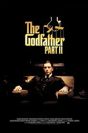

Scream, Dir. Wes Craven

| Time | Release Year | Release Date |
|---|---|---|
| 1 hour 51 minutes | 1996 | Dec 20 |
Kevin Williamsons and Wes Craven's
Scream is a groundbreaking horror film in every since of the word.
The witty banter and who-dunnit type mystery allows for the film to be funny
while also keep the audicene on edge as, much like Randy Meeks says "EVERYBODY'S A SUSPECT".
While Kevin Williamsons made the scirpt the films overall aesthetic is giving life through
fammed horror director Wes Craven. The film was one of the frist to used meta
(the discussion of horror films in a horror film) brought back slasher in the 90's and made the once dead genre
reanimated to blockbuster. This one is always a hit at the halloween party even to this day.
The Godfather Part II, Dir. Francis Ford Coppola

| Time | Release Year | Release Date |
|---|---|---|
| 3 hour 22 minutes | 1974 | Dec 20 |
The Godfather Part II is likely one of the best squeals to be released. It's not often that a classic is followed up with a film better than it. Godfather Part I is still a masterclass in film, but Part II it's a film that contrast it's rise of Vito and his family to the fall of Micheal years later. It shows us the start of this family business to its eventual decline.